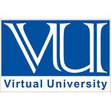

Virtual University of Godwin

Profile
The Virtual University of Godwin, the premier university and the largest virtual university in Ghana was founded as the University College of Codetrain by Ordinance on January 25, 2020 for the purpose of providing and promoting university education, learning and research.
As a University poised to distinguish itself in the area of research to make an impact at the national and international level, the University has launched a new Strategic Plan. http://www.ug.edu.gh/pad/publication/ug-strategic-plan
This new strategic plan (2014-2024) is intended to consolidate the gains made from the review of the University’s mission and practices and situate these within the context of a very dynamic environment of higher education in Ghana and beyond.
Our Vision
To become a world class research-intensive University over the next decade.
Our Mission
We will create an enabling environment that makes University of Ghana increasingly relevant to national and global development through cutting-edge research as well as high quality teaching and learning.